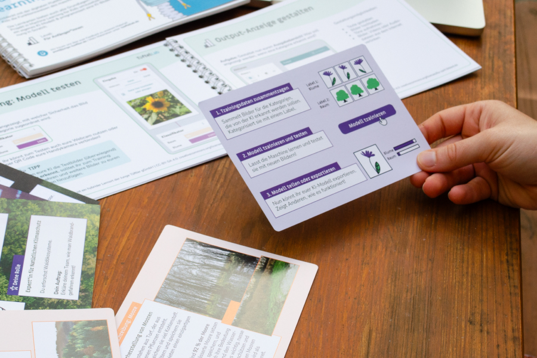

KI-Box Klima
Künstliche Intelligenz trifft Natürlichen Klimaschutz
Die KI-Box Klima ist eine pädagogische Materialbox, die Schüler*innen und Lehrkräften einen praxisnahen Zugang zu den Zukunftsthemen Künstliche Intelligenz und Natürlicher Klimaschutz ermöglicht. Ausgestattet mit Bausätzen, Spielen, Comics und aktivierenden Lernmaterialien erkunden die Teilnehmenden, wie KI gemeinwohlorientiert im Klima- und Naturschutz eingesetzt werden kann, und setzen eigene Projekte in ihrem unmittelbaren Lebensumfeld um.
Begleitend zur Box werden Online-Kurse und monatliche Online-Fragerunden angeboten. Das Projekt wurde 2024 vom BMUKN initiiert und bis Ende 2026 verlängert. Es richtet sich an Lernende ab der 8. Klasse und wird bundesweit kostenfrei an Lehrkräfte, Bildungseinrichtungen, Klima- und Umweltschutzinitiativen sowie weitere Multiplikator*innen verteilt.
Inhalte der KI-Box Klima
Die KI-Box vereint vielfältige Lernformate, die Neugier wecken und zur aktiven Auseinandersetzung einladen – darunter Comics, Spiele, Hands-on-Aktionen zur Pflanzenbestimmung sowie Module zur Entwicklung eigener KI-Anwendungen. Gemeinsam mit einer Kollegin verantwortete ich die Neuentwicklung bestimmter Lernmaterialien und Projektideen.
KI fürs Klima
Ein zentrales Element der KI-Box ist das Planspiel „KI fürs Klima“. Die Teilnehmenden schlüpfen in die Rolle eines interdisziplinären Forschungsteams und untersuchen, wie KI zum Schutz von Wäldern und Mooren eingesetzt werden kann. Sie recherchieren fachliche Hintergründe, diskutieren Lösungsansätze und entwickeln darauf aufbauend ihren eigenen KI-Prototypen zum Schutz dieser Ökosysteme.

Digitale Begleitmaterialien
Die Onlinekurse begleiten die Arbeit mit den analogen Inhalten der KI-Box und bieten einen niedrigschwelligen Einstieg in das Thema Künstliche Intelligenz. Grundlagenkurse und Lernkarten stellen die eingesetzten technischen Werkzeuge und KI-Anwendungen vor. Ergänzend stehen ausführliche Onlinekonzepte für die Umsetzung der verschiedenen Aktionsideen zur Verfügung.
Projektweiterführung: Citizen Science
2025 wurde das Angebot um den Schwerpunkt Daten und Citizen Science erweitert. Begleitet durch mehrere Onlinekurse entwickeln die Teilnehmenden ein eigenes Citizen-Science-Projekt im Kontext des Natürlichen Klimaschutzes, erstellen ein Forschungskonzept, sammeln Daten und werten diese anschließend aus.
Meine Rolle
Ich war maßgeblich an der Konzeption, didaktischen Ausarbeitung und Umsetzung der KI-Box Klima beteiligt – von der inhaltlichen Recherche und Texterstellung über Design und Layout bis hin zur finalen Druckausgabe bzw. interaktiven Umsetzung in einem LMS. Darüber hinaus übernahm ich die fachliche Recherche und arbeitete eng mit Expert*innen aus den Bereichen Künstliche Intelligenz und Natürlicher Klimaschutz zusammen, um die Inhalte verständlich, fundiert und praxisnah aufzubereiten. Begleitend nehme ich regelmäßig an den projektbegleitenden Online-Fragerunden teil und unterstütze Teilnehmende bei inhaltlichen Fragen oder technischen Unsicherheiten.
Weitere Informationen zum Projekt: https://ki-box-klima.de/